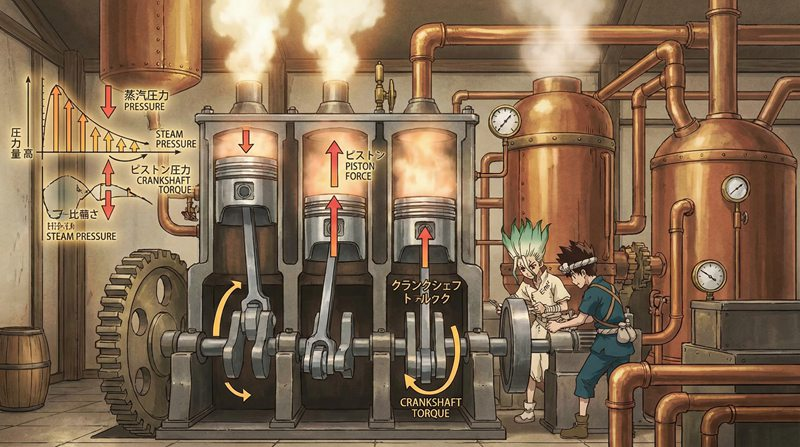
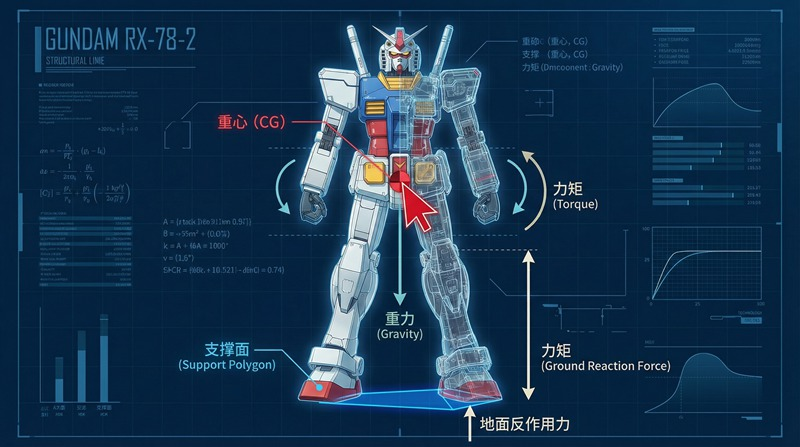

返回课程列表
第五课
能量方法
石纪元的科学复兴与高达的能量系统
⏱️ 约40分钟
《石纪元》展示了用科学从零开始重建文明的过程，《高达》系列的机体设计涉及先进的能量系统。这些都是能量方法的完美案例。
石纪元的能量利用
千空在石纪元中从最基础的化学能开始，逐步掌握热能、电能、机械能的转换。每一步都是能量方法的实际应用。

从零开始的能量阶梯
石纪元中的能量发展：
- 火的利用：木材燃烧释放化学能，温度约700°C，人类文明的起点
- 水力发电：利用水的势能驱动水车，再带动发电机产生电能
- 蒸汽机：煤炭燃烧加热水产生蒸汽，推动活塞做功
- 内燃机：汽油燃烧产生高压气体，直接推动活塞，效率更高
高达的动力系统
高达系列中的机体使用各种动力源：核聚变引擎、GN粒子驱动、阳电子炮等。虽然是虚构的，但设定中包含真实的能量概念。

高达动力系统分析
机动战士的能量系统：
- 核聚变引擎：UC纪元高达使用米诺夫斯基核聚变炉，理论上可行
- GN Drive：00高达的永动机设定违反热力学第二定律
- 光束军刀：高温等离子体约束在磁场中，需要巨大能量维持
- 推进系统：在太空中使用推进剂喷射，遵循火箭方程